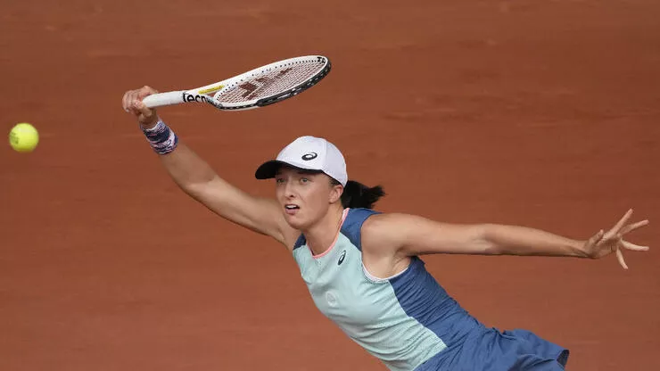

Neler oldu?
SPOR HABERLERİ
1 / 6
![Paul Pogba, Manchester United'dan ayrıldı. Kulübün resmi internet sitesinden yapılan açıklamada Paul Pogba'ya hizmetleri için teşekkür edilirken, bundan sonraki kariyeri için de başarılar dilendi. Pogba, 16 yaşında katıldığı Manchester United akademisinden bedelsiz olarak Juventus'un yolunu tutmuştu. İtalyan ekibinde etkileyici bir performans ortaya koyan Pogba, 2016 yazında 105 milyon euro'luk bonservis bedeliyle yeniden Manchester United'a imza atmıştı. Manchester United formasıyla 246 resmi maça çıkan Pogba 40 gol atıp 48 de asist yaptı.](img/ManchesterUnitedPaulPogbanınTakımdanAyrıldığınıAçıkladı.jpg)
Manchester United, Paul Pogba'nın takımdan ayrıldığını açıkladı!
2 / 6
![Fenerbahçe, Portekizli teknik direktör Jorge Jesus ile 1 yıllık sözleşme imzalandığını açıkladı. Fenerbahçe Kulübü, Portekizli teknik adam Jorge Jesus ile 1 yıllık anlaşma imzaladıklarını açıkladı. Sarı-lacivertliler, 1 sezon için Jesus'a 3 milyon Euro ödeyecek. Sarı-lacivertliler, Jesus'u Kamuyu Aydınlatma Platformu'na (KAP) da bildirdi. Yapılan açıklama şu şekilde: 'Şirketimiz, 2022-2023 futbol sezonu Futbol A takım teknik direktörlük görevi için Sayın Jorge Fernando Pinheiro de Jesus ile 3.000.000 Avro garanti ücret karşılığında anlaşmaya varmıştır.'](img/FenerbahceJorgeJesusuKapaBildirdi.jpg)
Fenerbahçe, Jorge Jesus'u KAP'a bildirdi! İşte alacağı ücret
3 / 6
![İtalya Serie A şampiyonu Milan, kulübün 1.2 milyar euro karşılığında RedBird Capital Partners'a satıldığını duyurdu. Inter'in 2 puan önünde girdiği ligin son haftasında Sassuolo'yu deplasmanda 3-0 yenen Milan, Serie A'da 11 yıl sonra ligi zirvede tamamlamdı. 19. şampiyonluğunu elde eden kırmızı siyahlı kulüpte flaş bir gelişme yaşandı. ABD'li yatırım şirketi RedBird Capital, Milan’ı 1.2 milyar Euro karşılığında satın aldı. RedBird Capital, bir başka Amerikalı yatırım şirketi Eliot Management'ten kulübün hisselerinin yüzde 70'inin yönetimini devraldı.](img/IsteMilaninYeniSahibi.jpg)
Milan satıldı! İşte yeni sahibi ve fiyatı!
4 / 6
![Fenerbahçe'de kadro dışı durumda olan Mesut Özil, sarı-lacivertli kulüpten ayrılacağına yönetlik haberlere cevap verdi. Fenerbahçe Kulübü'nün tecrübeli orta sahası Mesut Özil, sosyal medya hesabından bir paylaşım yaptı. Sarı-lacivertlilerden ayrılacağı iddia edilen oyuncu, suskunluğunu bozdu. Mesut Özil, Instagram hesabından yaptığı paylaşımda şu ifadeleri kullandı: 'Son günlerde kariyerim ile ilgi yapılan iddialarla ilgili olarak bir açıklama yapmam zorunlu oldu. İlk 6 ay ücret dahi almadan, çocukluk aşkım olan Fenerbahçe ile 3.5 yıl bir kontrat imzalayarak, kariyer hedefimi tamamlamıştım. Altını çizerek tekrarlıyorum; Fenerbahçe’den başka bir takımda kariyerimi noktalamayacağım. Sözleşmem süresi boyunca, Çubuklu formamızı terletmek tek amacım. Bu kararım çok net ve kesindir. Profesyonel yaşamın gereklilikleri gereği, yönetimimizin benimle ilgili bir karar alması durumunda ise bu tavra sadece saygı duyacağım. Çok çalışıp kendimi daima hazır tutacağım. Her zaman dediğim gibi; aslolan Fenerbahçe’dir. Büyük Fenerbahçe taraftarına sevgi ve saygılarımla…'](img/MesutOzil.jpg)
Mesut Özil ayrılık iddialarına cevap verdi! 'Kararım çok net ve kesindir'!
5 / 6
![Red Bull, Sergio Perez'in kontratını 2024 sonuna kadar uzattığını açıkladı. Meksikalı sürücü, 2020 yılının ardından Red Bull'a katılmış ve ilk yılında istikrar yakalamakta zorlanmıştı. Fakat geçen yılın son yarışı olan Abu Dhabi GP de dahil olmak üzere çeşitli yarışlarda takım arkadaşına büyük destek verdi. Perez, bu yıla çok daha iyi başladı ve geride kalan yedi yarışın ardından şampiyonayı üçüncü sırada götürüyor ve Verstappen'le arasında sadece 15 puan var. Hatta Perez, geçen hafta sonu Monako'da takım arkadaşına kıyasla daha güçlü bir performans sergiledi ve pazar günkü yarışı ilk sırada tamamlayarak kariyerinin üçüncü zaferini elde etti. Sezona güçlü başlamasının ardından Red Bull ve Perez arasında yeni kontrat görüşmeleri zaten başlamıştı. İlk galibiyetin ardından da taraflar resmi anlaşmayı imzaladılar.](img/podium-sergio-perez-red-bull.jpg)
Red Bull, Sergio Perez'in kontratını 2024 sonuna kadar uzattığını açıkladı!
6 / 6
![Real Madrid'in Liverpool'u finalde mağlup ederek zafere ulaştığı. Şampiyonlar Ligi'nde Yılın 11'i belli oldu. Yılın 11'inde kalede sezon boyunca kritik kurtarışlar yapan Real Madrid'in file bekçisi Courtois yer aldı. Savunma dörtlüsü Robertson, Van Dijk, Anthony Rüdiger ve Alexander-Arnold'tan oluştu. Orta sahanın ortasında Fabinho, sağında De Bruyne, solunda ise Luka Modric kendine yer buldu. Hücum hattında ise bu sezon attığı kritik gollerle takımı adına ön plana çıkan iki Real Madridli oyuncu Vinicius Junior ve Karim Benzema'nın yanı sıra çeyrek finalde eflatun-beyazlılara elenen PSGli süperstar Kylian Mbappe yer aldı.](img/Yilin11i.jpg)
Şampiyonlar Ligi'nde Yılın 11'i açıklandı!
![A Milli Erkek Basketbol Takımı'nın, FIBA 2023 Dünya Kupası Elemeleri B Grubu'nda Büyük Britanya ile oynayacağı müsabakanın 25 kişilik aday kadrosu belli oldu. Ay-yıldızlılar, 3 Temmuz Pazar günü B Grubu’ndaki son maçında deplasmanda Büyük Britanya ile karşı karşıya gelecek. Kırmızı-beyazlıların aday kadrosunda şu oyuncular yer alıyor:'A. Buğrahan Tuncer (A.Efes), Deshane Davis Larkin (A.Efes), Yiğitcan Saybir (A.Efes), Erten Gazi (A.Efes), Akif Egemen Güven (A.Efes), Kartal Özmızrak (Bahçeşehir Koleji), Erkan Yılmaz (Bahçeşehir Koleji), Furkan Haltalı (Beşiktaş), Egehan Arna (Beşiktaş), Doğuş Özdemiroğlu (Darüşşafaka), Melih Mahmutoğlu (Fenerbahçe), J. Metecan Birsen (Fenerbahçe), Şehmus Hazer (Fenerbahçe), Onuralp Bitim (Bursaspor), Sadık Emir Kabaca (Galatasaray), Berkan Durmaz (Pınar Karşıyaka), Muhsin Yaşar (Tofaş), Berk İbrahim Uğurlu (Tofaş), Yiğit Arslan (Tofaş), Berk Demir (Türk Telekom), Cedi Osman (Cleveland Cavaliers / ABD), Sertaç Şanlı (FC Barcelona / İspanya), Alperen Şengün (Houston Rockets / ABD), Ömer Faruk Yurtseven (Miami Heat / ABD), Furkan Korkmaz (Philadelphia 76ers / ABD)'](img/12DevAdamınAdayKadrosuAçıklandı.jpg)
12 Dev Adam'ın aday kadrosu açıklandı!

Iga Swiatek 2 yıl sonra şmapiyon oldu!
![Ali Koç: 'Kulüpten bir kuruş alacağım yoktur.' Başkan Ali Koç, sarı-lacivertli kulübün Ülker Spor ve Etkinlik Salonu'nda gerçekleştirilen 2021 yılı olağan mali genel kurul toplantısında üyelerin konuşmalarına cevap verdi. Yönetimin üyeleri yeteri kadar arkasında hissetmediğini dile getiren Koç, 'İçinde bulunduğumuz futbol iklimi ve bir şehrin odağında dönen futbol yapılanmasını haykırırken Fenerbahçe camiasının kılını kıpırdatmaması olamaz. 'Başarısızlıklarını örtmeye çalışıyor' deniyor, bakın gidişat iyi değil. Kamu kuruluşlarını onlarca yıl sabırla bekleyen, devleti ele geçirmek için hamleler yapan, son yıllarda hızı artan bir olguyla acı şekilde önce biz sonra devlet olarak karşılaştık. Sizler içinde bulunduğumuz durumun öneminin farkında olmazsanız, yönetim kurulu bir yere kadar mücadele verir.' ifadelerini kullandı.](img/AliKoc'BirKuruşAlacağımYoktur'.jpg)
"Bir kuruş alacağım yoktur"!
F1 pilotu Sebastian Vettel kendisini soyan hırsızları scooter'la kovaladı!
![Spor Toto Süper Lig ekiplerinden Vavacars Fatih Karagümrük'te teknik direktör Volkan Demirel, Başkan Süleyman Hurman’ın isteği doğrultusunda yollarını ayırdıklarını duyurdu. VOLKAN DEMİREL'DEN AÇIKLAMA: Genç teknik direktör Volkan Demirel, ayrılık sonrası sosyal medya hesabından; 'Fatih Karagümrük Kulubü ile olan yolculuğumuz bugün itibari ile Başkan Süleyman Hurma'nın isteği doğrultusunda tamamlandı. Futbolcu arkadaslarıma, başarımız için emek veren herkese ve onlar için mücadele etmekten büyük gurur duyduğum taraftara sonsuz teşekkür ediyorum.' dedi.](img/VolkanDemirelDönemiSonaErdi.jpg)
Fatih Karagümrük'te Volkan Demirel dönemi sona erdi!
Emiliano Viviano ve Guilherme, 38 maçın tamamında oynadı!!
×